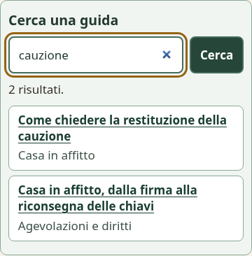
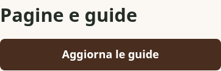
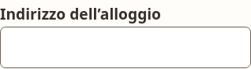

Tutorial per smartphone
Scegli cosa vuoi fare. Le schermate mostrano i pulsanti come appaiono su Per Me.
Trova la guida che ti serve
- Su Per Me, tocca Cerca una guida subito sotto il menu.
- Scrivi quello che cerchi, per esempio cauzione.
- Tocca il titolo che ti serve. Nell’esempio, il primo risultato apre la sezione sulla restituzione.

Leggi una guida senza Internet
- Con Internet attivo, apri l’app Per Me e tocca Aggiorna le guide.
- Attendi il messaggio con il numero di pagine salvate.
- Tieni aperta l’app oppure riaprila dall’icona, se l’hai aggiunta alla schermata iniziale. Tocca una guida per leggere il testo salvato.

Quando torni online puoi verificare gli aggiornamenti e aprire foto e fonti esterne.
Salva il verbale in PDF
- Apri il verbale di riconsegna e completa le voci che ti servono, a partire dall’indirizzo.
- In fondo, tocca Rivedi i dati per controllarli. Poi tocca Stampa o salva in PDF.
- Nella schermata di stampa, scegli Salva come PDF se compare tra le destinazioni. Salva il file nella cartella che preferisci e aprilo per controllarlo.
